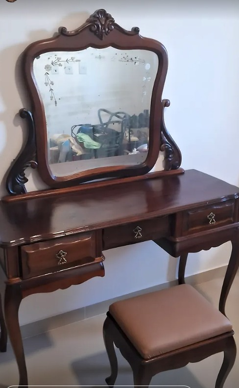
Restauração de móveis antigos
Recuperação estrutural e estética de peças com história.
Restauração de móveis antigos, empalhamento de cadeiras e acabamento artesanal com atenção ao desenho, à madeira e à memória de cada peça.
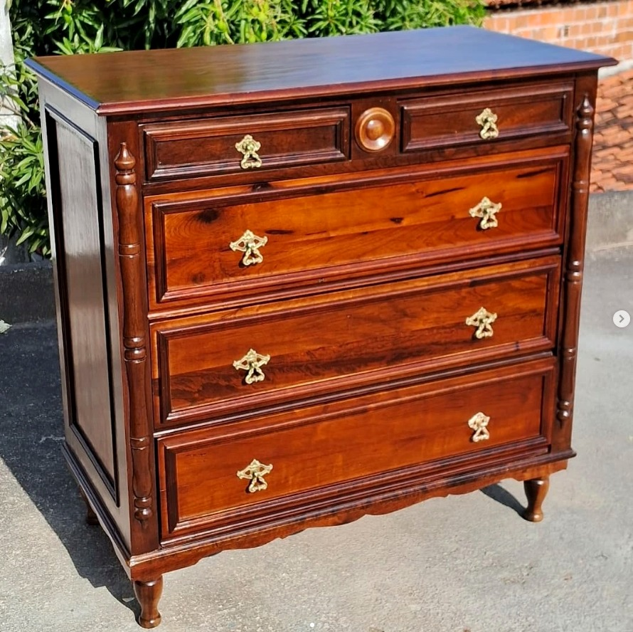
Serviços artesanais de restauração, recuperação e acabamento, respeitando a estrutura, a madeira e a história de cada peça.

Recuperação estrutural e estética de peças com história.
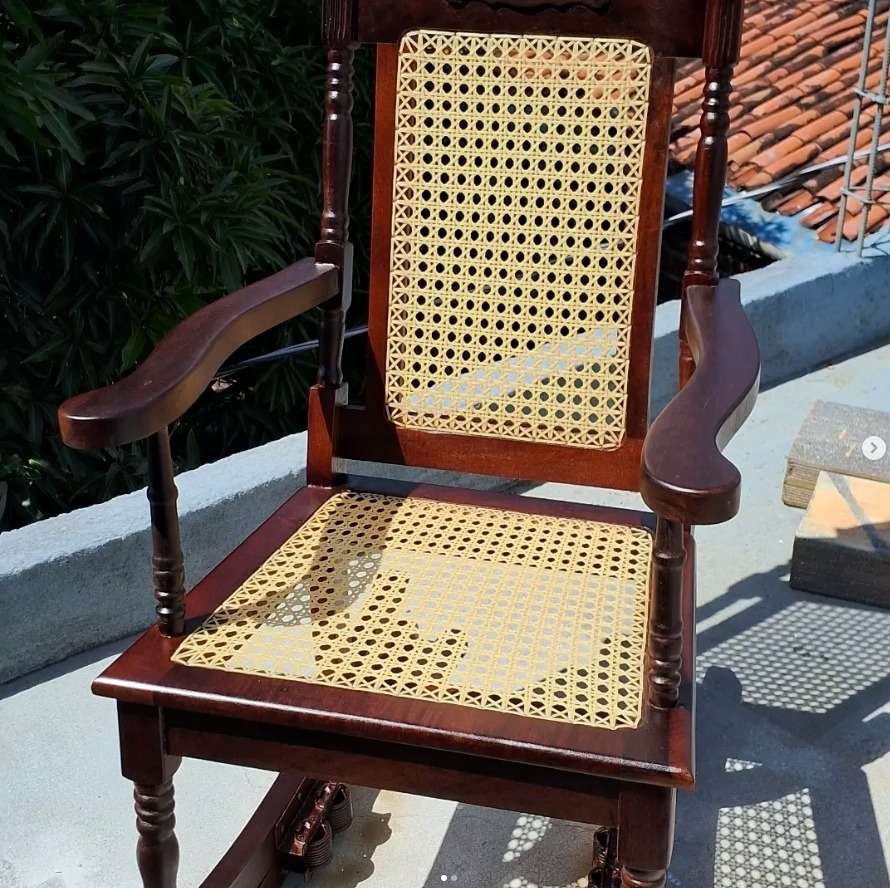
Assentos e encostos renovados com acabamento delicado.
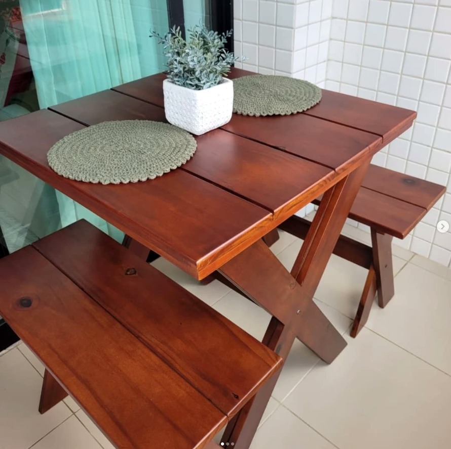
Verniz, pintura, recuperação e proteção da madeira.
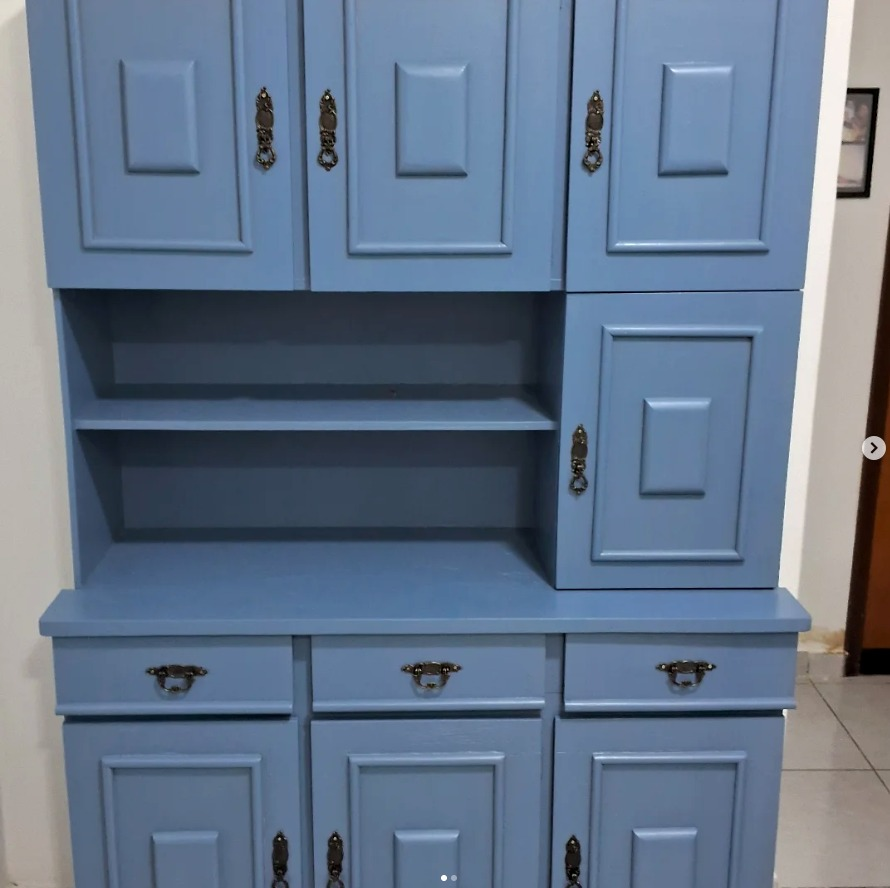
Novas cores e acabamentos para transformar o ambiente.
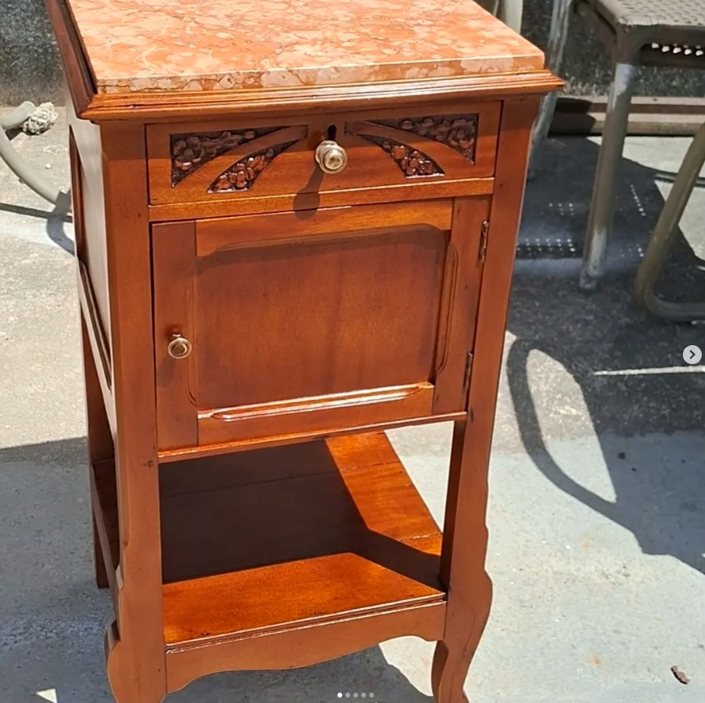
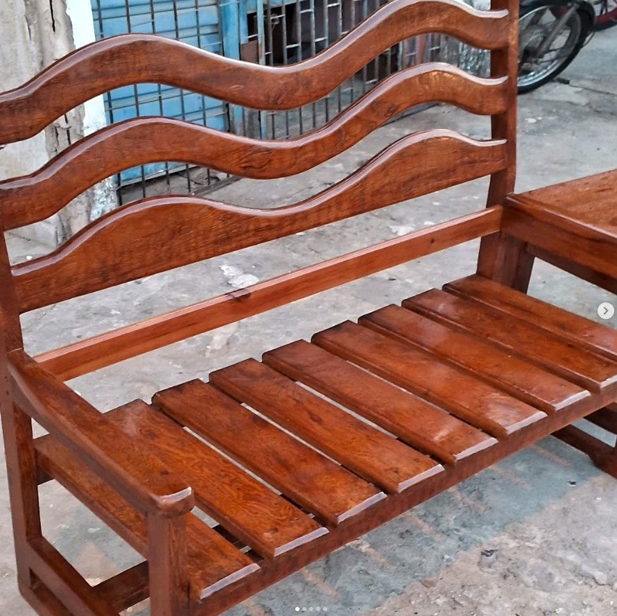
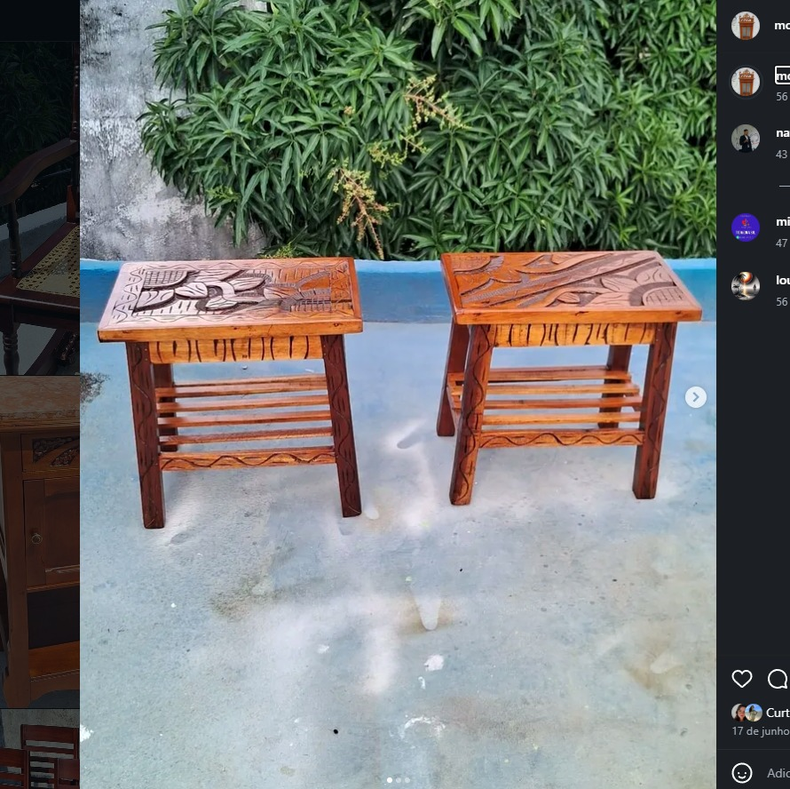
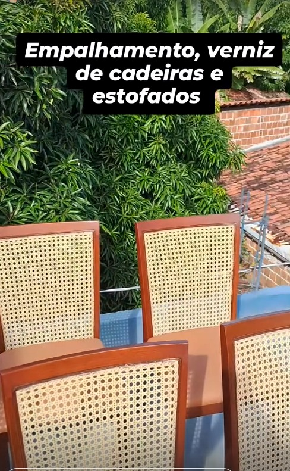
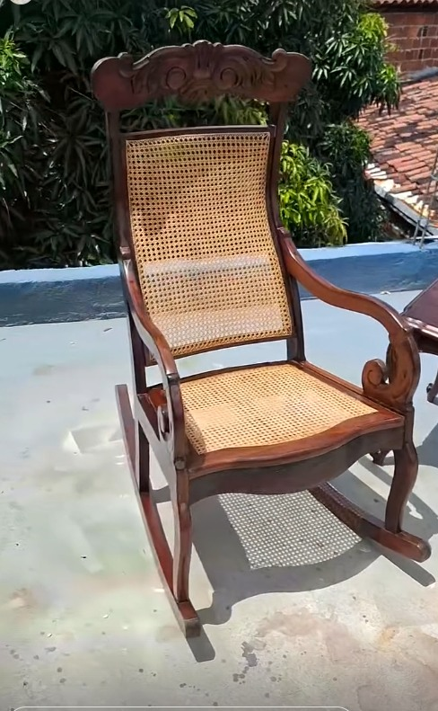
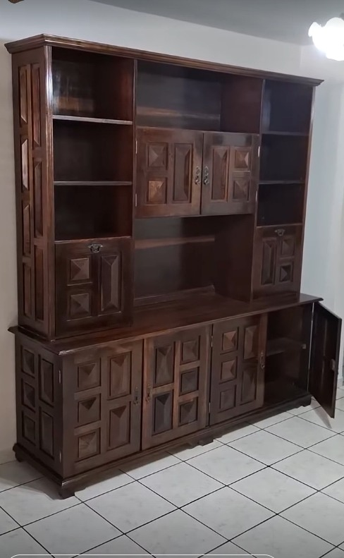
Arraste os controles e compare o estado original de cada peça com o resultado final da restauração.
Ver mais trabalhos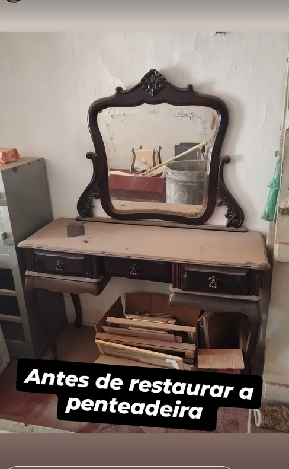
AntesDepois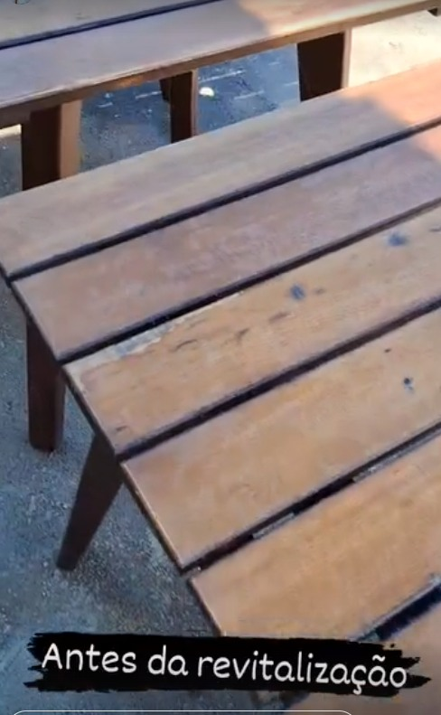
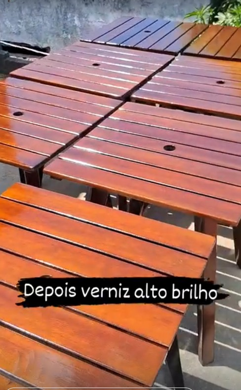
AntesDepoisMostre o móvel e explique o que deseja recuperar.
O estado da peça e o serviço são analisados.
O trabalho é feito conforme a necessidade da peça.
O móvel volta renovado e pronto para o ambiente.
Comentários reais recebidos nas publicações do perfil.